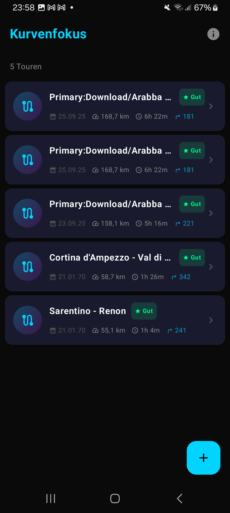
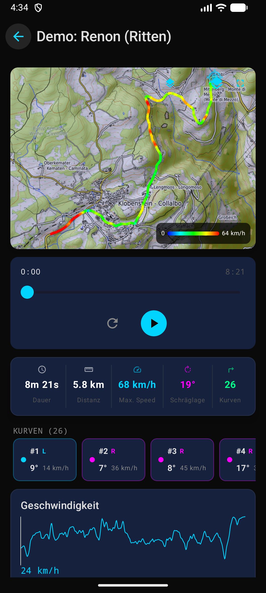
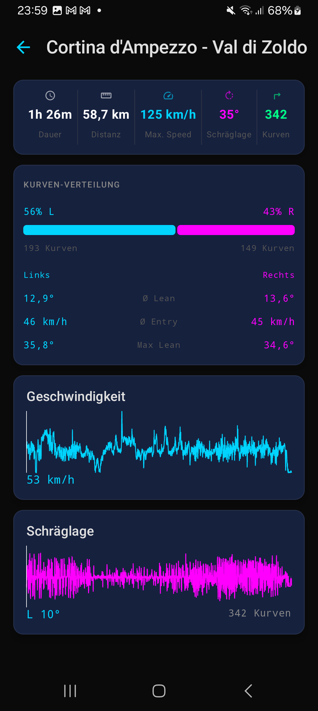
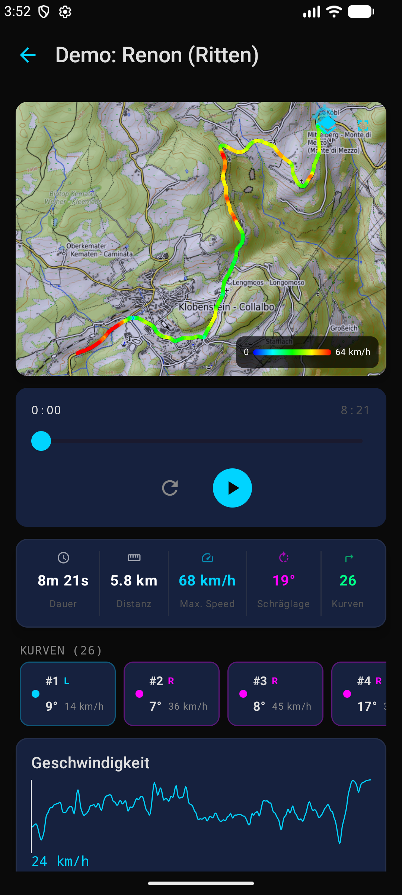
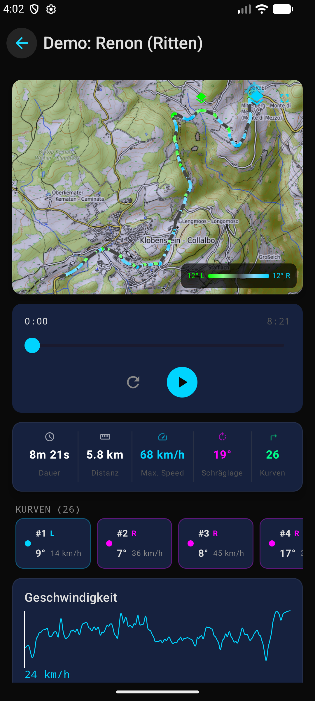
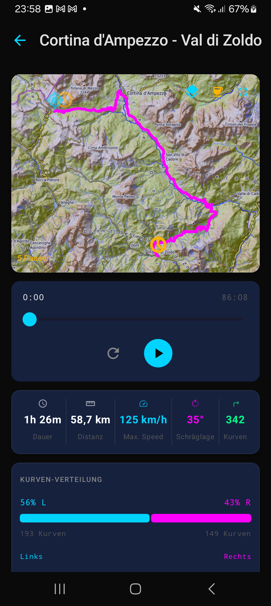
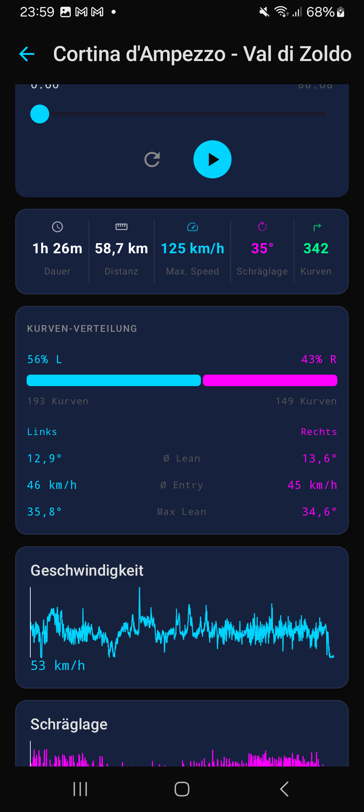

Android App
Jetpack Compose UI
Material 3 Dark Theme — optimiert für vertikales Scrolling mit kompaktem Dashboard-Layout.

Tour-Liste
5 Touren mit Qualitäts-Badge

Dashboard
Karte + Stats + Kurvenverteilung

Kurven-Analyse
L/R Balance + Detail-KPIs + Charts

Telemetrie-Charts
Speed + Schräglage-Diagramme

Vollbild-Karte
Topo + Route + Kurven + Pausen

Speed-Karte NEU
Route farbcodiert nach Geschwindigkeit

Lean-Karte NEU
Route farbcodiert nach Schräglage
Entwicklung
Version History
Die Entwicklung der Android-App von der ersten Version bis heute.
v0.0.6
Februar 2026 — aktuell
Speed- und Lean-Farbcodierung auf der Karte. AES-256-GCM Verschlüsselung für DSGVO-konforme Datenspeicherung.
Neues Dashboard-Layout mit optimierter Kartenansicht.
v0.0.5
Februar 2026
AES-256-GCM Verschlüsselung für alle gespeicherten Ride-Daten. Schlüssel-Management über Android Keystore.
v0.0.2
Februar 2026 — erste Version
Erste funktionsfähige Version mit Tour-Liste, Dashboard, Kurvenverteilung, Telemetrie-Charts und Vollbild-Karte.
Grundlegende Import-Pipeline für CSV/JSON/ZIP.

Tour-Liste

Dashboard

Kurven-Analyse

Charts

Vollbild-Karte
5 Screens
App-Architektur
Navigation via Drawer-Menu mit klarer Trennung zwischen Tour-Liste, Analyse-Dashboard und Vollbild-Karte.
1
Tour-Liste
Startscreen mit allen importierten Touren, sortiert nach Datum.
- Qualitäts-Badge (Gut / OK / Niedrig)
- Distanz, Dauer, Kurven-Anzahl
- Swipe-to-Delete mit Bestaetigungs-Dialog
- Long-Press zum Umbenennen
- FAB-Button für neuen Import
2
Dashboard
Haupt-Analyse-Ansicht für eine einzelne Tour — alles auf einen Blick.
- Interaktive Karte mit Route
- Timeline-Slider mit Playback
- Quick-Stats (Dauer, Distanz, Speed, Lean, Kurven)
- Kurven-Verteilung (L/R Balance)
- Geschwindigkeits- und Schräglagen-Chart
3
Vollbild-Karte
Maximale Kartenansicht mit allen Overlays und Steuerungselementen.
- Kartenstil-Wechsel (4 Stile)
- Kurven-Filter (5 Stufen)
- Pausen-Toggle mit Markern
- Fit-to-Route Button
- Start/End-Marker + Legende
4
About
App-Informationen, Feature-Übersicht und rechtliche Links.
- Feature-Showcase (4 Kategorien)
- Support-Links (Website, Email)
- Datenschutzerklärung + AGB
- Versions-Info (Name + Build-Code)
5
Drawer-Menu
Seitliches Navigations-Menu mit allen Hauptbereichen.
- Tour-Liste
- Tour importieren
- Kurvenfokus Pro
- Über Kurvenfokus
- Footer: Datenschutz, AGB, Support
6
Paywall PRO
Subscription-Screen für Kurvenfokus Pro mit Feature-Übersicht.
- Feature-Liste mit Icons
- Preis: 4,99 EUR/Monat
- 7 Tage kostenlose Testphase
- Käufe wiederherstellen
- Free-Limit: 3 Touren